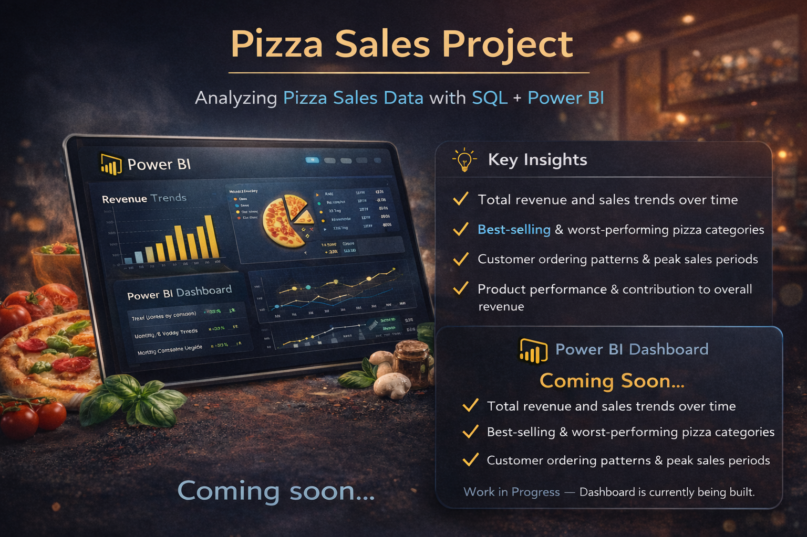

A New Project I am working on!
Pizza Sales Project
This project focuses on analyzing pizza sales data to uncover key business insights and trends. The dataset includes transaction-level data such as order details, product information, and sales performance.
I am currently working on cleaning and transforming the data using SQL and Excel, including handling missing values, standardizing fields, and preparing the dataset for analysis.
The next phase of this project involves building an interactive Power BI dashboard to visualize key metrics.
This project demonstrates my ability to work across the full data analysis workflow, from raw data cleaning to building business-focused dashboards that support data-driven decision-making.
